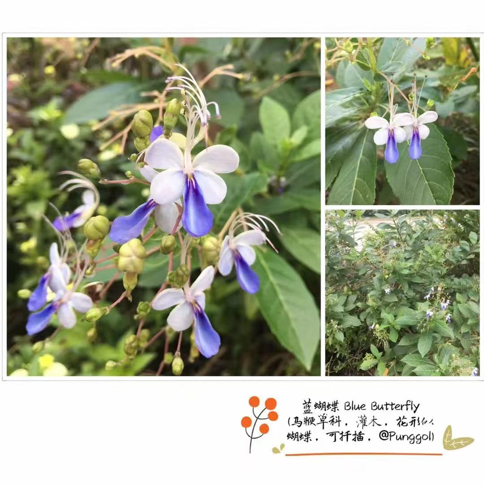

Test Page for Advertiser (Nanyang Plant)
== FB Pixel ==
FB Pixel Events manual:
FB Pixel Events - Auto Detect:
== Nanyang plant ==
记录身边常见的植物. As a peronsal interest, this page is to post plant spieces that are commonly seen in Singapore.

END OF Test Page